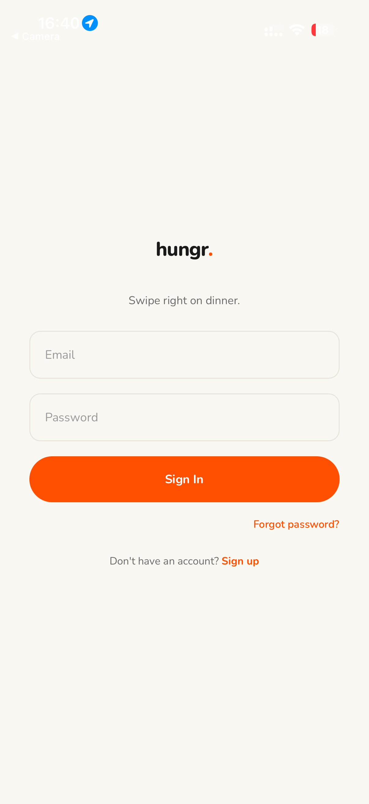
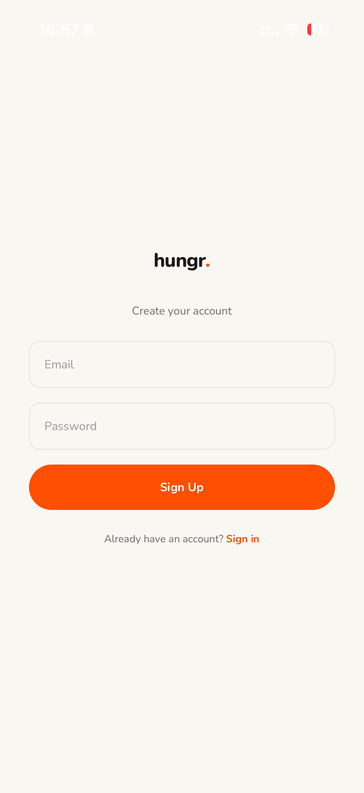
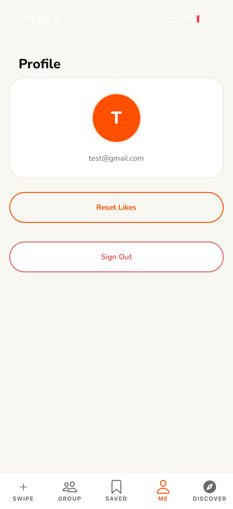
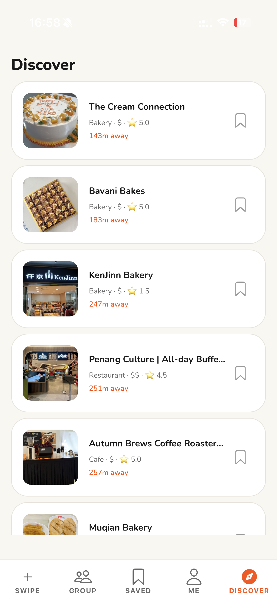
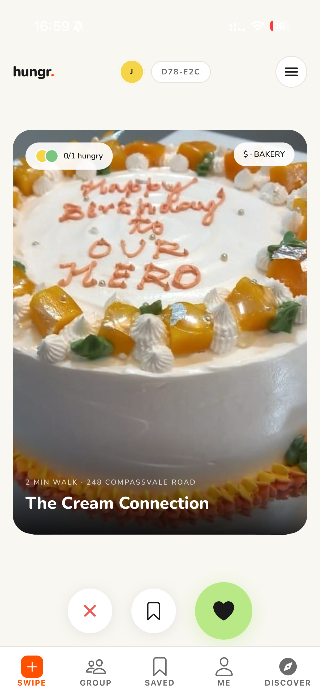
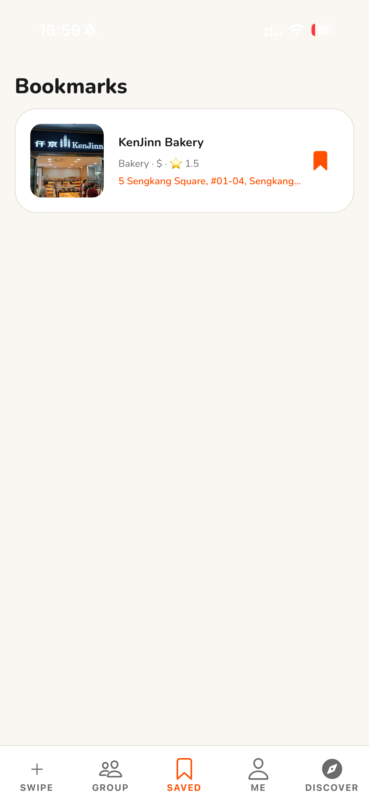
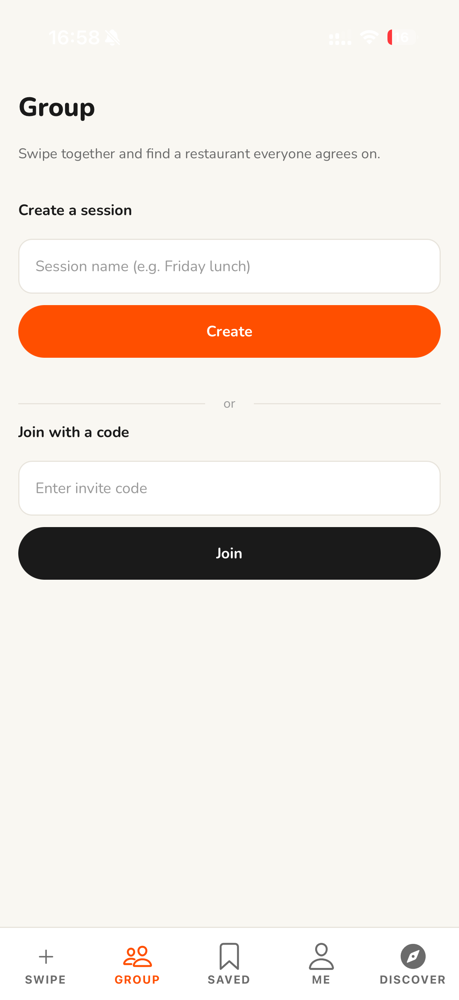
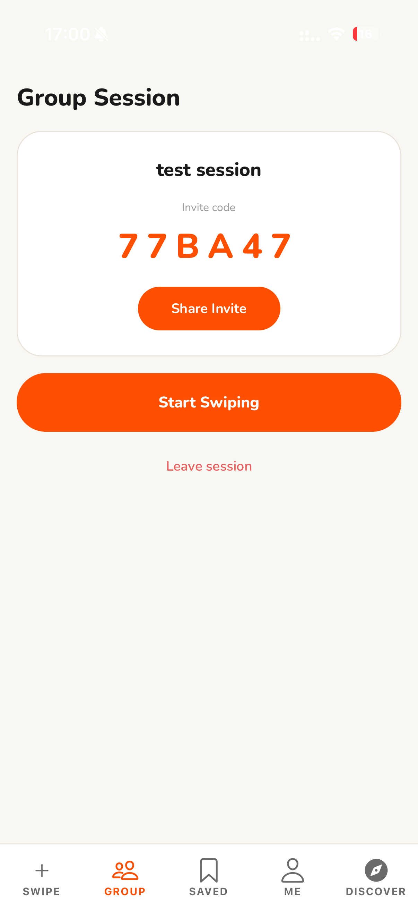

hungr.
Table of Contents
- Motivation
- Aim & Vision
- User Profiling
- User Stories
- Scope & Tech Stack
- System Architecture
- Database Schema
- Features
- Match Detection
- Milestone Plan
- Software Engineering Practices
- Running Locally
1. Motivation
Deciding where to eat as a pair or group is a universally frustrating experience. We are always spoiled for choice, so reaching a consensus on where to dine is often exhausting and the conversations are circular — "Where do you want to go?" "I don't know, where do you want to go?"
Hungr is a shared food decision-making app where groups swipe simultaneously on nearby dining options, drawing on the intuitive, low-effort mechanics that made dating apps so widely adopted. By surfacing only the options the whole group collectively likes, users skip the back-and-forth entirely and arrive at a decision everyone is happy with — turning a recurring social frustration into something efficient and even enjoyable.
2. Aim & Vision
Hungr will be a cross-platform mobile app that helps any group reach a unanimous dining decision in under a minute of playful swiping. Each member is shown the same deck of nearby restaurants and swipes right to like or left to pass; the app collects everyone's preferences and computes the option the group collectively wants.
| Principle | What it means |
|---|---|
| Effortless | Decisions done via the app, no debating required. |
| Fair | Results revealed only once every member finishes swiping. |
| Relevant | Real restaurants pulled live from Google Places, sorted by proximity. |
Long-term vision: the default tool friend groups, couples, and colleagues reach for whenever "where should we eat?" comes up.
3. User Profiling
Hungr targets small social groups (2–6 people) who eat out together.
| Persona | Need |
|---|---|
| Indecisive Friends | Deciding on a place to eat. |
| Couples | Discover somewhere new that both genuinely like. |
| Distant Friends | Decide where to eat when you do not know what each other likes. |
4. User Stories
Core
- As a group of friends, we can create a session and invite members via a shared code, so everyone participates at the same time.
- As a session host, I can filter restaurants by price, location, and cuisine, so only relevant options appear.
- As a group member, I can swipe right/left and see a match when all members like the same option.
- As a user, I can save restaurants to a personal favourites list.
- As a returning user, I can sign in to a secure account so my data persists.
Extensions
- View a history of past sessions and how the group ranked each restaurant.
- Set cuisine preferences on my profile to pre-tune sessions.
- Seed a session's deck from the group's combined favourites.
5. Scope & Tech Stack
| Layer | Technology | Why |
|---|---|---|
| Mobile frontend | React Native (Expo, expo-router) | One codebase for iOS & Android. |
| Backend API | Node.js + Express (TypeScript) | Lightweight typed REST layer. |
| Database | Supabase (PostgreSQL) | Managed Postgres with RLS + Realtime. |
| Authentication | Supabase Auth | Secure email/password sessions. |
| Restaurant data | Google Places API | Location-aware restaurant data & photos. |
In scope (M1): auth · location-based fetch · session create/join via code · shared 20-restaurant deck · swipe UI · most-liked result.
Out of scope (later): filtering · session history · combined-favourites seeding · polish.
6. System Architecture
Hungr follows a three-tier architecture. The Expo client talks only to our Express API, which holds the Supabase service-role key and brokers all access to the database and Google Places.
Key design decisions
- Session-scoped decks — the host's "start" freezes 20 restaurants in
session_restaurants; everyone swipes the same deck, making matches meaningful. - Server-side match detection — unanimous like = match; otherwise the most-liked restaurant is the fallback pick.
- Polling for sync — a 3-second poll propagates session state, avoiding RLS pitfalls; Supabase Realtime is an optional fast path.
- Per-user rate limiting — throttled per authenticated user, not per IP.
7. Database Schema
Managed through versioned SQL migrations.
| Table | Responsibility |
|---|---|
restaurants | Cached records keyed by Google place_id. |
sessions | A group swipe session (host, title, code, status). |
session_participants | Membership + per-member "finished swiping" flag. |
session_restaurants | The frozen 20-restaurant deck. |
swipes | Each member's like/nope per restaurant. |
bookmarks | A user's personal saved restaurants. |
8. Features
Authentication
Sign up (with email verification), log in, and reset password via Supabase Auth. Every API request carries the session token, scoping all data to the user.
| Login | Sign up | Profile |
|---|---|---|
 |  |  |
Discover Nearby Restaurants
The Discover tab requests location and fetches nearby restaurants live from Google Places via the backend. Any restaurant can be saved to favourites.
| Discover | Restaurant detail | Favourites |
|---|---|---|
 |  |  |
Sessions & Swiping
A host creates a session with a title → unique invite code. Members join with the code; the host starts, freezing the deck. Everyone swipes the same cards with reanimated gestures.
| Sessions | Lobby & code | Swiping |
|---|---|---|
 |  |  |
9. Match Detection
Once all participants finish, the backend tallies likes per restaurant.
10. Milestone Plan
| Milestone | Deliverables | Status |
|---|---|---|
| M1: Proof of Concept | Auth · Places fetch · session create/join · swipe UI · most-liked result | Done |
| M2: Prototype | Real-time join & swipe · match-after-all-finish · filters · UI/UX | In progress |
| M3: Extended | Favourites · session history · combined-favourites deck · polish | Planned |
11. Software Engineering Practices
| Practice | How we apply it |
|---|---|
| Version control | GitHub feature branches; PRs reviewed by the other member before merge to main. |
| Testing | Unit tests for backend logic; structured user testing each milestone. |
| Code quality | DRY — shared logic extracted; ESLint + TypeScript enforced. |
| Single responsibility | Each module, route, and component has one clear job. |
12. Running Locally
# 1. Install dependencies npm run install:all # 2. Create env files # backend/.env -> SUPABASE_URL, SUPABASE_SERVICE_ROLE_KEY, GOOGLE_PLACES_API_KEY, PORT # mobile/.env -> EXPO_PUBLIC_SUPABASE_URL, EXPO_PUBLIC_SUPABASE_ANON_KEY, # EXPO_PUBLIC_API_URL=http://<your-LAN-ip>:3000 # 3. Run (two terminals) npm run backend # Express API on :3000 npm run mobile # Expo - scan the QR with Expo Go (SDK 54)
Note: on a physical phone,EXPO_PUBLIC_API_URLmust use your machine's LAN IP (e.g.http://192.168.x.x:3000), notlocalhost.